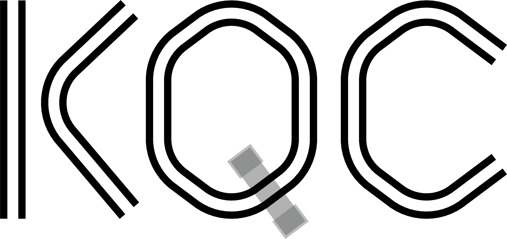
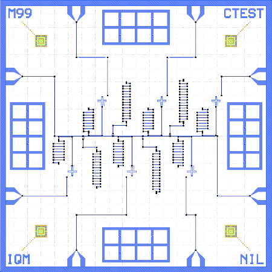

¶
KQCircuits is a Python library developed by IQM for automating the design of superconducting quantum circuits. It uses the KLayout layout design program API.
KQCircuits was created to reduce the time and effort needed to design quantum processors and to help avoid human errors in the design process. Defining the circuits using code allows the geometry to be created in a consistent way, with more precision than manual drawing. Using KQCircuits it is easy to instantly generate multiple designs with different parameter values affecting the geometry in complex ways. KQCircuits also enables the exchange of circuit element definitions between quantum processor designers, making it easy to modify or extend the elements designed by others.
KQCircuits generates multi-layer 2-dimensional-geometry representing common structures in quantum processing units (QPU). It includes definitions of parametrized geometrical objects or “elements”, framework to easily define your own elements, framework to get geometry from the elements by setting values to parameters and a framework to assemble a full QPU design by combining many of the elements in different geometrical relations. Among other templates, are also structures to combine QPU designs to create optical mask layout and EBL patterns for fabrication of quantum circuits and export a set of files for a mask as needed for QPU fabrication.